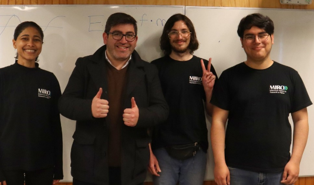

About Me
I'm Diego Román Cortés — a physicist and developer based in Santiago, Chile. I recently completed a Master’s degree in Physics at the Universidad de Chile, where I specialized in photonic lattices under the supervision of Dr. Rodrigo A. Vicencio.
My academic work bridges both theoretical and experimental physics. I’ve led photonic research projects, developed custom numerical tools for eigenvalue problems, and supervised undergraduate students during summer research.
Alongside research, I’ve worked as a teaching assistant in advanced undergraduate and graduate-level physics courses — including photonic systems, vibrations and waves, and experimental methods. I also actively participate in science outreach through the Millennium Institute for Research in Optics (MIRO).
Outside academia, I’m passionate about free/libre open-source software, clean code, and creative uses of physics in technology and art.
Links
- Google Scholar
- Web of Science ResearcherID: LDE-7685-2024
- ORCiD
- Email: diego.roman.c@ug.uchile.cl